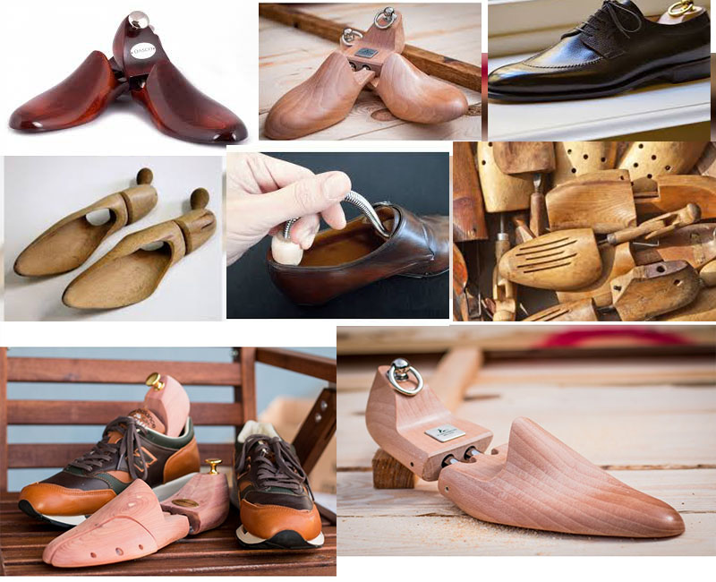

Welcome
Shoe pads Company Haim
Adjustable, spring-loaded shoe molds made of natural cedar French company Haim for shoes with a wide and stiff heel will allow the shoe to retain its original appearance. Prevents deformation of shoes, formation of creases and wrinkles on shoes. Pads of cedar perfectly absorb moisture, deodorize shoes and serve as a recommended compulsory accessory. The service life of shoes increases several times with the regular use of Haim shoes. Spring-loaded double rods are directed along the length and width of the shoes to effectively fill the mold. Specialist. share for the price! Limited time.
